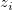
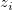
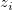

/math-0a645fc515fe6128f91758f996ebe307.png "x_i\,") ,
, /math-b19930487b77bb2b470dafd74c4e60fa.png "y_i\,") ,), i = 0, 1, ... n-1 が与えられると、n-1:
,), i = 0, 1, ... n-1 が与えられると、n-1:
内容 |
Xファンクション interpxyz は、周期性を示すデータに対して2次元の補間を実行します。通常の補間手法は、周期的なデータの傾向を無視して「近傍法」の計算を実行します。トレース補間は、行インデックス番号ベースの曲線に働くので、データの連続的な形態を保持することができます。補間手法は、線形、3次スプライン、3次B-スプラインから選択します。
XYZデータに対してトレース補間を実行するには、以下のように操作します。
| 再計算 |
分析結果の再計算を制御します。
詳細は、以下をご覧下さい。分析結果の再計算 |
|---|---|
| 入力 |
補間するXYZ範囲を指定します。 範囲制御についてはこちらを確認してください：入力データを指定する |
| 手法 |
補間/補外の手法を指定します。
|
| ポイント数 |
補間されたポイントの数です。 |
| 出力 |
出力XYデータ範囲を指定します。 |
一般に、2つの隣り合うデータポイント間で補間されると、最終的なデータセットのデータポイントの数は、ポイント数変数と同じになります。
詳細なアルゴリズムは下記のようになります。
異なる一連の三要素のデータ (, ,), i = 0, 1, ... n-1 が与えられると、n-1:
/math-a50bf741606f2c85fb3829b5f18a3196.png "x_i<x<x_{i+1},x=x_i+\frac j{npts}\left( x_{i+1}-x_i\right)")
/math-02fa42913b4fdf4c28452e69ae4fb6ba.png "y_i<y<y_{i+1},y=y_i+\frac j{npts}\left( y_{i+1}-y_i\right)")
/math-acf2ac4544594daccad6f286d3999502.png "z_i<z<z_{i+1},z=z_i+\frac j{npts}\left( z_{i+1}-z_i\right)")
ここで、 j=1,2,3...(npts-1) で、npts はポイント数で指定した値です。